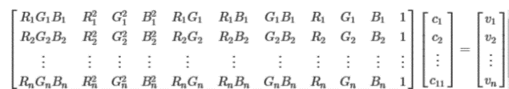
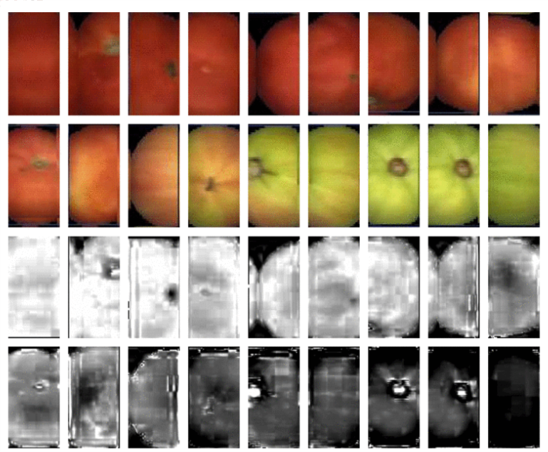
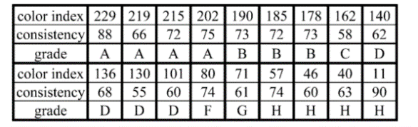

Dah-Jye Lee et al proposed a method in their paper Rapid Color Grading for Fruit Quality Evaluation Using Direct Color Mapping
.
This paper 's work mainly focused on how to use color to classify the fruits into different grades. The method, color grading
used by the paper will assign each
product a maturity and appearance level based on its color.
First, for a given fruit, the paper let an expert to find some ideal fruits representing each maturity level from raw to ripe. Then it will use an equation to convert the fruits multiple dimension color, for example, RGB, to a 1-D color space. Below is the equation that they used for the conversion. 
  Since each picked fruits RGB is known, and the desired color indices, v1, v2 ... vn is assigned. So it is possible to solve the coefficient c1, c2 ... cn. When a new fruit is coming, will compute the fruits color index v and compare with the standard v1, v2 ... vn. They also added the standard deviation for color consistency test. The images for tomatoes color index and consistency are shown. The paper use these two attributes to determine the grade.
The paper also uses the CannyEdge method to detect the defection of the fruit. If the edge number is high, it means the fruit is very seriously rotten.
Read the paper online